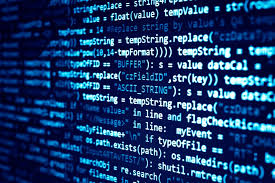
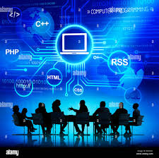
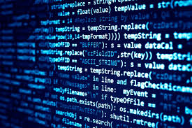
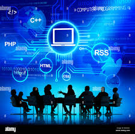

Coding, also known as programming, is the process of creating instructions for computers to follow.
Through various programming languages like Python, Java, and JavaScript, coders write scripts that allow software applications, websites, and systems to function efficiently.
Coding is not just about writing code; it involves problem-solving, logical thinking, and creativity.
By breaking down complex problems into smaller, manageable tasks, coders can develop innovative solutions that enhance technology and improve daily life.
With coding skills in high demand across various industries,
learning to code opens up a world of opportunities for aspiring programmers, engineers, and tech enthusiasts.
Coding is an essential skill in the digital age, enabling individuals to create software, websites, and applications that power modern technology.
By mastering coding, one can unlock the potential to innovate and automate tasks, making processes more efficient and effective.
Coding empowers creators to bring their ideas to life , whether it's developing a mobile app, designing a website, or programming a robot
 



19th Century: The earliest mechanical calculating machines were designed in the early 19th century. Notable inventions include Joseph Marie Jacquard's loom, which used punched wooden cards to weave fabric designs1. This concept of using punched cards would later influence early computer design. 1821: Charles Babbage, an English mathematician, conceived the idea of a steam-driven calculating machine called the "Difference Engine". Although the project was never completed due to technological limitations, it laid the groundwork for future computing devices

Computers are essential tools in today's digital age, revolutionizing the way we live, work, and communicate. These electronic devices process and store vast amounts of data, enabling complex computations and facilitating the automation of countless tasks. From personal use in homes for browsing the internet and playing games, to professional applications in businesses and scientific research, computers have become indispensable. Their ability to connect to the internet allows for global communication and access to a wealth of information
TOP